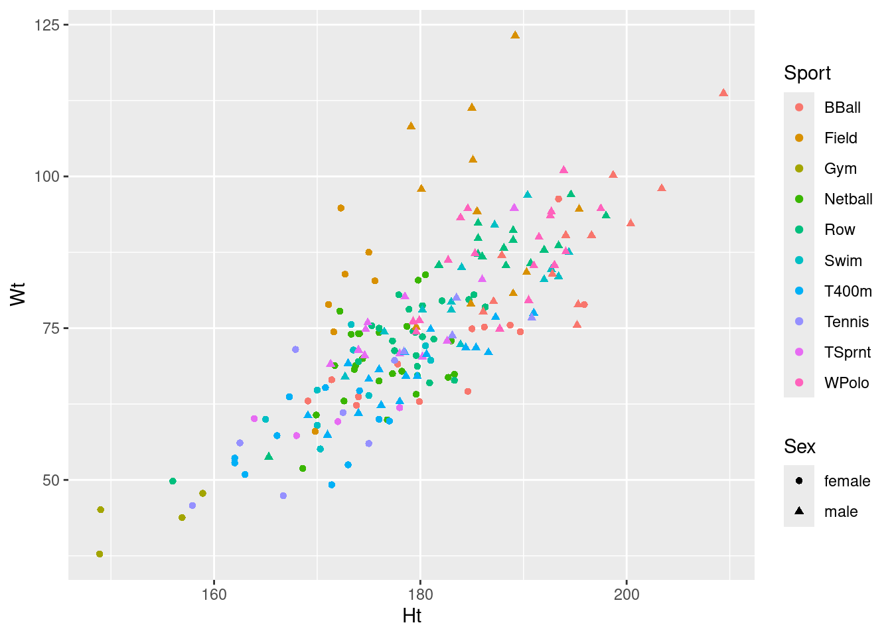
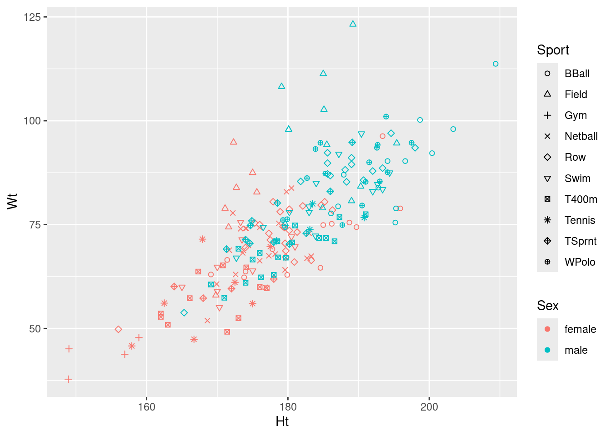

library(car)
library(tidyverse)33 Multivariate analysis of variance
Packages for this chapter:
33.1 Fabricated data
The data in link (probably made up) are measurements of two variables y1 and y2 on three groups, labelled a, b and c. We want to see whether y1 or y2 or some combination of them differ among the groups.
Read in the data and check that you have 12 observations on 2 numeric variables from 3 different groups.
Run a one-way ANOVA predicting
y1fromgroup. Are there any significant differences iny1among the groups? If necessary, run Tukey. What do you conclude?Repeat all the previous part for
y2.Make a plot of
y1againsty2, with the points distinguished by which group they are from.How is it that group
bis not distinguishable on eithery1ory2individually (from the ANOVAs), but is distinguishable on your graph? Explain briefly.Run a one-way multivariate analysis of variance, obtaining a P-value. Note the very small P-value.
33.2 Do characteristics of urine depend on obesity?
A study was made of the characteristics of urine of young men. The men were classified into four groups based on their degree of obesity. (The groups are labelled a, b, c, d.) Four variables were measured, x (which you can ignore), pigment creatinine, chloride and chlorine. The data are in link as a .csv file. There are 45 men altogether.
Read in the data and check that you have the right number of observations and the right variables.
Make boxplots of each of the three variables of interest against obesity group.
How, if at all, do the groups differ on the variables of interest?
Run a multivariate analysis of variance, using the three variables of interest as response variables, and the obesity group as explanatory. (This is a so-called one-way MANOVA.)
What do you conclude? Is this in line with what your boxplots said? Explain briefly.
33.3 How do height and weight depend on sport played by elite athletes?
This question uses the data on Australian elite athletes, which can be found at link. 202 elite athletes had various physical and physiological measurements taken, and for each athlete, their gender (in the column Sex) and the sport they play (Sport) was also noted. The data values are separated by tabs, meaning that read_tsv will read them in.
Read in the data and verify that you have 202 rows and 13 columns.
We are going to see whether the height-weight combination of an athlete depends significantly on which sport they play and which gender they are. Explain (very) briefly why a multivariate analysis of variance will be necessary to do this.
Create a response variable for a MANOVA. (You don’t need to show what you got, since it is rather big.) The columns you want are called
HtandWt.Run a multivariate analysis of variance to see whether the height-weight combination depends significantly on gender, sport or the combination of both. Display the results. Use the small-m
manovaway to do this one.Briefly justify removing the interaction term from your previous model, and fit a model without it. You can use either
manovaorManovafor this; they should both work. (You only need to use one of them.) Display your results.See if you can make a graph that shows what’s going on here. Bear in mind that you have two quantitative variables and two categorical ones, so you will need to find a way to display everything. Hint: what would you do with two quantitative variables and one categorical one? Can you find a way to generalize that idea by displaying the other categorical variable differently? I think we have seen a couple of ideas that will work, somewhere in the lecture notes (but in a different context). Or you can search for ideas, of course. For full marks, obtain a plot which does not give you any warnings. (The grader will know which of the possible plots give warnings, and will deduct extra marks if you assert that a plot gives no warnings when in fact it does. That is to say, if you get any warnings, you need to include those in what you hand in).
My solutions follow:
33.4 Fabricated data
The data in link (probably made up) are measurements of two variables y1 and y2 on three groups, labelled a, b and c. We want to see whether y1 or y2 or some combination of them differ among the groups.
- Read in the data and check that you have 12 observations on 2 numeric variables from 3 different groups.
Solution
my_url <- "http://ritsokiguess.site/datafiles/simple-manova.txt"
simple <- read_delim(my_url, " ")Rows: 12 Columns: 3
── Column specification ────────────────────────────────────────────────────────
Delimiter: " "
chr (1): group
dbl (2): y1, y2
ℹ Use `spec()` to retrieve the full column specification for this data.
ℹ Specify the column types or set `show_col_types = FALSE` to quiet this message.simpleAs promised: 12 observations, 2 numeric variables y1 and y2, and one categorical variable (as text) containing three groups a,b,c.
\(\blacksquare\)
- Run a one-way ANOVA predicting
y1fromgroup. Are there any significant differences iny1among the groups? If necessary, run Tukey. What do you conclude?
Solution
simple.1 <- aov(y1 ~ group, data = simple)
summary(simple.1) Df Sum Sq Mean Sq F value Pr(>F)
group 2 63.45 31.72 21.2 0.000393 ***
Residuals 9 13.47 1.50
---
Signif. codes: 0 '***' 0.001 '**' 0.01 '*' 0.05 '.' 0.1 ' ' 1TukeyHSD(simple.1) Tukey multiple comparisons of means
95% family-wise confidence level
Fit: aov(formula = y1 ~ group, data = simple)
$group
diff lwr upr p adj
b-a 1.666667 -0.9417891 4.275122 0.2289181
c-a 5.200000 2.9089670 7.491033 0.0003548
c-b 3.533333 1.0391725 6.027494 0.0083999The \(F\)-test said that there were differences among the groups, so I ran Tukey and found that group c is significantly bigger on y1 than the other two groups.
\(\blacksquare\)
- Repeat all the previous part for
y2.
Solution
simple.2 <- aov(y2 ~ group, data = simple)
summary(simple.2) Df Sum Sq Mean Sq F value Pr(>F)
group 2 19.05 9.525 9.318 0.00642 **
Residuals 9 9.20 1.022
---
Signif. codes: 0 '***' 0.001 '**' 0.01 '*' 0.05 '.' 0.1 ' ' 1TukeyHSD(simple.2) Tukey multiple comparisons of means
95% family-wise confidence level
Fit: aov(formula = y2 ~ group, data = simple)
$group
diff lwr upr p adj
b-a 3.0 0.8440070 5.155993 0.0093251
c-a 2.4 0.5063697 4.293630 0.0157279
c-b -0.6 -2.6615236 1.461524 0.7050026Same idea: there is a difference, and Tukey reveals that this time group a is significantly smaller than the other groups on y2.
\(\blacksquare\)
- Make a plot of
y1againsty2, with the points distinguished by which group they are from.
Solution
y1 and y2 can be either way around, since they are both response variables (!):
ggplot(simple, aes(x = y1, y = y2, colour = group)) + geom_point()\(\blacksquare\)
- How is it that group
bis not distinguishable on eithery1ory2individually (from the ANOVAs), but is distinguishable on your graph? Explain briefly.
Solution
Group b has the same kind of y1 values as group a and the same kind of y2 values as group c. This means looking at either variable singly is not enough to distinguish group b. But group b stands out on the graph as being “top left” of the picture. That means that y1 has to be low and y2 has to be high, both together, to pick out group b. That seems like a lot of work, but the important point that I want you to raise is that the points in group b are distinguished by a particular combination of values of y1 and y2.
\(\blacksquare\)
- Run a one-way multivariate analysis of variance, obtaining a P-value. Note the very small P-value.
Solution
This is just like the seed weight and yield example in class (deliberately so):
response <- with(simple, cbind(y1, y2))
simple.3 <- manova(response ~ group, data = simple)
summary(simple.3) Df Pillai approx F num Df den Df Pr(>F)
group 2 1.3534 9.4196 4 18 0.0002735 ***
Residuals 9
---
Signif. codes: 0 '***' 0.001 '**' 0.01 '*' 0.05 '.' 0.1 ' ' 1The P-value here, 0.00027, is smaller than either of the P-values for the one-variable ANOVAs. This expresses the idea that the group difference is essentially multivariate (it depends on the combination of y1 and y2 values). I only wanted you to note that it is smaller than either of the other ANOVAs; you don’t need to say anything about why.
For completeness, we should do Box’s M test as well:
summary(BoxM(response, simple$group)) Box's M Test
Chi-Squared Value = 3.517357 , df = 6 and p-value: 0.742 No problems here at all.
We were in the fortunate position of being able to draw a picture, because we had only two response variables, and we could plot them against each other with the groups labelled. (If we had three response variables, like the peanuts example, we wouldn’t be able to do this, barring some kind of 3D-plotting procedure.)
\(\blacksquare\)
33.5 Do characteristics of urine depend on obesity?
A study was made of the characteristics of urine of young men. The men were classified into four groups based on their degree of obesity. (The groups are labelled a, b, c, d.) Four variables were measured, x (which you can ignore), pigment creatinine, chloride and chlorine. The data are in link as a .csv file. There are 45 men altogether.
- Read in the data and check that you have the right number of observations and the right variables.
Solution
read_csv:
my_url <- "http://ritsokiguess.site/datafiles/urine.csv"
urine <- read_csv(my_url)Rows: 45 Columns: 5
── Column specification ────────────────────────────────────────────────────────
Delimiter: ","
chr (1): obesity
dbl (4): x, creatinine, chloride, chlorine
ℹ Use `spec()` to retrieve the full column specification for this data.
ℹ Specify the column types or set `show_col_types = FALSE` to quiet this message.urineThe variables are as promised, and we do indeed have 45 rows.
\(\blacksquare\)
- Make boxplots of each of the three variables of interest against obesity group.
Solution
Just churn through it:
ggplot(urine, aes(x = obesity, y = creatinine)) + geom_boxplot()ggplot(urine, aes(x = obesity, y = chlorine)) + geom_boxplot()ggplot(urine, aes(x = obesity, y = chloride)) + geom_boxplot()This also works with facets, though it is different from the other ones we’ve done, in that we have to collect together the \(y\)-variables first rather than the \(x\)s:
urine %>%
pivot_longer(creatinine:chlorine, names_to="yname", values_to="y") %>%
ggplot(aes(x = obesity, y = y)) + geom_boxplot() +
facet_wrap(~yname, scales = "free", ncol = 2)
I decided to throw a couple of things in here: first, the scales="free" thing since the \(y\)-variables (this time) are on different scales, and second, the ncol=2 to arrange the facets in (3 cells of) a \(2\times 2\) grid, rather than having them come out tall and skinny.1 It’s unusual to have faceted boxplots, but this is one of those cases where it makes sense. (The key is different \(y\)’s but the same \(x\), I think.)
The conclusions about the boxplots are, of course, the same. I think it makes it easier to have the three boxplots side by side, but it’s up to you whether you think that gain is worth the extra coding.
Extra: let’s take another look at that longer data frame:
urine %>%
pivot_longer(creatinine:chlorine, names_to="yname", values_to="y") You might say that there is one quantitative variable now, the thing we called y, and two categorical variables, obesity and yname. So why not make a grouped boxplot? All right:
urine %>%
pivot_longer(creatinine:chlorine, names_to="yname", values_to="y") %>%
ggplot(aes(x=yname, y=y, colour=obesity)) + geom_boxplot()This actually looks a lot like the facetted boxplots (if you imagine drawing a box around each group of four boxplots and removing the scales="free" before). There is, as the saying goes, more than one way to skin a cat.
\(\blacksquare\)
- How, if at all, do the groups differ on the variables of interest?
Solution
Any sensible comment here is good. You can take the approach that group D is lowest on creatinine and chloride, but there is not much to choose (given the amount of variability) on chlorine. Or you can say that groups B and C are generally highest, except for chloride where A is higher. Anything of this general kind is fine. The point here is that some of the groups appear to be different on some of the variables, which would make a multivariate analysis of variance (in a moment) come out significant.
\(\blacksquare\)
- Run a multivariate analysis of variance, using the three variables of interest as response variables, and the obesity group as explanatory. (This is a so-called one-way MANOVA.)
Solution
Create the response variable and run manova:
response <- with(urine, cbind(creatinine, chlorine, chloride))
urine.1 <- manova(response ~ obesity, data = urine)
summary(urine.1) Df Pillai approx F num Df den Df Pr(>F)
obesity 3 0.43144 2.2956 9 123 0.02034 *
Residuals 41
---
Signif. codes: 0 '***' 0.001 '**' 0.01 '*' 0.05 '.' 0.1 ' ' 1At some point, you should run Box’s M test, either here or at the start of the next part (before you get to your conclusions):
summary(BoxM(response, urine$obesity)) Box's M Test
Chi-Squared Value = 30.8322 , df = 18 and p-value: 0.0301 This P-value is small, but not, for this test, small enough to be a problem.
\(\blacksquare\)
- What do you conclude? Is this in line with what your boxplots said? Explain briefly.
Solution
The null hypothesis (that each of the variables have the same mean for each of the groups) is rejected: that is, not all of the groups have the same mean on all of the variables. Based on the idea that there seemed to be differences between the groups in the boxplots, this makes sense. (That’s what I saw, anyway. There was a lot of variability within the groups, which is why the P-value didn’t come out smaller.)
Extra: the other way of doing this is the following, using Manova from car:
response.1 <- lm(response ~ obesity, data = urine)
summary(Manova(response.1))
Type II MANOVA Tests:
Sum of squares and products for error:
creatinine chlorine chloride
creatinine 496.768761 -225.02136 4.507476
chlorine -225.021364 1431.85432 86.226818
chloride 4.507476 86.22682 152.854274
------------------------------------------
Term: obesity
Sum of squares and products for the hypothesis:
creatinine chlorine chloride
creatinine 181.07035 -66.72530 40.03686
chlorine -66.72530 103.80568 -41.37182
chloride 40.03686 -41.37182 20.03773
Multivariate Tests: obesity
Df test stat approx F num Df den Df Pr(>F)
Pillai 3 0.4314359 2.295559 9 123.00000 0.0203377 *
Wilks 3 0.6080320 2.395937 9 95.06636 0.0171207 *
Hotelling-Lawley 3 0.5800706 2.427703 9 113.00000 0.0146529 *
Roy 3 0.4336849 5.927027 3 41.00000 0.0018659 **
---
Signif. codes: 0 '***' 0.001 '**' 0.01 '*' 0.05 '.' 0.1 ' ' 1manova gives you the Pillai test, but Manova gives you all four; here, they are all significant, but to different degrees.
The result is the same, or at least consistent. You don’t need do this one here (though you can as an alternative), but when you come to repeated measures you will need to be able to use Manova.
To understand the differences in the variables due to the groups, we need to run a discriminant analysis (coming up later).
\(\blacksquare\)
33.6 How do height and weight depend on sport played by elite athletes?
This question uses the data on Australian elite athletes, which can be found at link. 202 elite athletes had various physical and physiological measurements taken, and for each athlete, their gender (in the column Sex) and the sport they play (Sport) was also noted. The data values are separated by tabs, meaning that read_tsv will read them in.
- Read in the data and verify that you have 202 rows and 13 columns.
Solution
As in the hint:
my_url <- "http://ritsokiguess.site/datafiles/ais.txt"
athletes <- read_tsv(my_url)Rows: 202 Columns: 13
── Column specification ────────────────────────────────────────────────────────
Delimiter: "\t"
chr (2): Sex, Sport
dbl (11): RCC, WCC, Hc, Hg, Ferr, BMI, SSF, %Bfat, LBM, Ht, Wt
ℹ Use `spec()` to retrieve the full column specification for this data.
ℹ Specify the column types or set `show_col_types = FALSE` to quiet this message.athletes202 rows and 13 columns indeed.
\(\blacksquare\)
- We are going to see whether the height-weight combination of an athlete depends significantly on which sport they play and which gender they are. Explain (very) briefly why a multivariate analysis of variance will be necessary to do this.
Solution
We now have two response variables, height and weight, rather than just one. In order to do a test with more than one response variable, we need to use multivariate ANOVA rather than regular ANOVA. (The first sentence is enough.)
Extra: the explanatory variables, sport and gender, are both categorical here, which makes a MANOVA work. If either of them had been quantitative, we would have needed to do a multivariate regression, which is beyond the scope of what we do in this course.
\(\blacksquare\)
- Create a response variable for a MANOVA. (You don’t need to show what you got, since it is rather big.) The columns you want are called
HtandWt.
Solution
Use cbind to glue the two columns together:
response <- with(athletes, cbind(Ht, Wt))Either way around, height or weight first, is good. Also good is the dollar sign, which you’ll need to do twice (and thus the with way is more elegant):
response_a <- cbind(athletes$Ht, athletes$Wt)athletes %>% select(Ht, Wt) %>%
as.matrix() -> y response Ht Wt
[1,] 176.8 59.90
[2,] 172.6 63.00
[3,] 176.0 66.30
[4,] 169.9 60.70
[5,] 183.0 72.90
[6,] 178.2 67.90
[7,] 177.3 67.50
[8,] 174.1 74.10
[9,] 173.6 68.20
[10,] 173.7 68.80
[11,] 178.7 75.30
[12,] 183.3 67.40
[13,] 174.4 70.00
[14,] 173.3 74.00
[15,] 168.6 51.90
[16,] 174.0 74.10
[17,] 176.0 74.30
[18,] 172.2 77.80
[19,] 182.7 66.90
[20,] 180.5 83.80
[21,] 179.8 82.90
[22,] 179.6 64.10
[23,] 171.7 68.85
[24,] 195.9 78.90
[25,] 189.7 74.40
[26,] 177.8 69.10
[27,] 185.0 74.90
[28,] 184.6 64.60
[29,] 174.0 63.70
[30,] 186.2 75.20
[31,] 173.8 62.30
[32,] 171.4 66.50
[33,] 179.9 62.90
[34,] 193.4 96.30
[35,] 188.7 75.50
[36,] 169.1 63.00
[37,] 177.9 80.50
[38,] 177.5 71.30
[39,] 179.6 70.50
[40,] 181.3 73.20
[41,] 179.7 68.70
[42,] 185.2 80.50
[43,] 177.3 72.90
[44,] 179.3 74.50
[45,] 175.3 75.40
[46,] 174.0 69.50
[47,] 183.3 66.40
[48,] 184.7 79.70
[49,] 180.2 73.60
[50,] 180.2 78.70
[51,] 176.0 75.00
[52,] 156.0 49.80
[53,] 179.7 67.20
[54,] 180.9 66.00
[55,] 179.5 74.30
[56,] 178.9 78.10
[57,] 182.1 79.50
[58,] 186.3 78.50
[59,] 170.0 64.80
[60,] 170.0 59.00
[61,] 180.5 72.10
[62,] 173.3 75.60
[63,] 173.5 71.40
[64,] 181.0 69.70
[65,] 175.0 63.90
[66,] 170.3 55.10
[67,] 165.0 60.00
[68,] 169.8 58.00
[69,] 174.1 64.70
[70,] 175.0 87.50
[71,] 171.1 78.90
[72,] 172.7 83.90
[73,] 175.6 82.80
[74,] 171.6 74.40
[75,] 172.3 94.80
[76,] 171.4 49.20
[77,] 178.0 61.90
[78,] 162.0 53.60
[79,] 167.3 63.70
[80,] 162.0 52.80
[81,] 170.8 65.20
[82,] 163.0 50.90
[83,] 166.1 57.30
[84,] 176.0 60.00
[85,] 163.9 60.10
[86,] 173.0 52.50
[87,] 177.0 59.70
[88,] 168.0 57.30
[89,] 172.0 59.60
[90,] 167.9 71.50
[91,] 177.5 69.70
[92,] 162.5 56.10
[93,] 172.5 61.10
[94,] 166.7 47.40
[95,] 175.0 56.00
[96,] 157.9 45.80
[97,] 158.9 47.80
[98,] 156.9 43.80
[99,] 148.9 37.80
[100,] 149.0 45.10
[101,] 172.7 67.00
[102,] 176.5 74.40
[103,] 183.0 79.30
[104,] 194.4 87.50
[105,] 193.4 83.50
[106,] 180.2 78.00
[107,] 183.0 78.00
[108,] 184.0 85.00
[109,] 192.7 84.70
[110,] 187.2 92.00
[111,] 183.9 72.30
[112,] 192.0 83.00
[113,] 190.4 96.90
[114,] 190.7 85.70
[115,] 181.8 85.40
[116,] 188.3 85.30
[117,] 198.0 93.50
[118,] 186.0 86.80
[119,] 192.0 87.90
[120,] 185.6 87.20
[121,] 165.3 53.80
[122,] 185.6 89.80
[123,] 189.0 91.10
[124,] 193.4 88.60
[125,] 185.6 92.30
[126,] 194.6 97.00
[127,] 189.0 89.50
[128,] 188.1 88.20
[129,] 200.4 92.20
[130,] 195.3 78.90
[131,] 194.1 90.30
[132,] 187.9 87.00
[133,] 209.4 113.70
[134,] 203.4 98.00
[135,] 198.7 100.20
[136,] 187.1 79.40
[137,] 196.6 90.30
[138,] 186.1 77.70
[139,] 192.8 83.90
[140,] 195.2 75.50
[141,] 169.1 60.60
[142,] 186.6 71.00
[143,] 184.4 71.80
[144,] 187.3 76.80
[145,] 185.1 102.70
[146,] 185.5 94.25
[147,] 184.9 79.00
[148,] 175.0 66.60
[149,] 185.4 71.80
[150,] 181.0 74.80
[151,] 176.0 68.20
[152,] 176.2 62.30
[153,] 174.0 61.00
[154,] 191.0 77.50
[155,] 171.0 57.40
[156,] 174.0 71.40
[157,] 180.2 70.30
[158,] 178.5 80.20
[159,] 190.3 84.20
[160,] 185.0 111.30
[161,] 189.0 80.70
[162,] 180.1 97.90
[163,] 189.2 123.20
[164,] 182.6 72.90
[165,] 186.0 83.00
[166,] 174.9 75.90
[167,] 180.6 70.70
[168,] 178.6 67.10
[169,] 173.0 69.20
[170,] 179.7 67.05
[171,] 174.6 70.50
[172,] 178.0 70.80
[173,] 178.5 71.00
[174,] 171.3 69.10
[175,] 178.0 62.90
[176,] 189.1 94.80
[177,] 195.4 94.60
[178,] 179.1 108.20
[179,] 180.1 97.90
[180,] 179.6 75.20
[181,] 174.7 74.80
[182,] 192.7 94.20
[183,] 179.3 76.10
[184,] 197.5 94.70
[185,] 182.7 86.20
[186,] 190.5 79.60
[187,] 191.0 85.30
[188,] 179.6 74.40
[189,] 192.6 93.50
[190,] 194.1 87.60
[191,] 193.0 85.40
[192,] 193.9 101.00
[193,] 187.7 74.90
[194,] 185.3 87.30
[195,] 191.5 90.00
[196,] 184.6 94.70
[197,] 179.9 76.30
[198,] 183.9 93.20
[199,] 183.5 80.00
[200,] 183.1 73.80
[201,] 178.4 71.10
[202,] 190.8 76.70\(\blacksquare\)
- Run a multivariate analysis of variance to see whether the height-weight combination depends significantly on gender, sport or the combination of both. Display the results. Use the small-m
manovaway to do this one.
Solution
The straightforward way is small-m manova. I don’t know what I should be calling my fitted model object, so I’m making something up. Don’t forget to use the right names for the variables, and to include an interaction:
htwt.1 <- manova(response ~ Sex * Sport, data = athletes)
summary(htwt.1) Df Pillai approx F num Df den Df Pr(>F)
Sex 1 0.52412 101.325 2 184 <2e-16 ***
Sport 9 0.87914 16.123 18 370 <2e-16 ***
Sex:Sport 6 0.04105 0.646 12 370 0.8023
Residuals 185
---
Signif. codes: 0 '***' 0.001 '**' 0.01 '*' 0.05 '.' 0.1 ' ' 1athletes %>%
unite("combo", c(Sex, Sport)) -> athletes_combo
summary(BoxM(response, athletes_combo$combo)) Box's M Test
Chi-Squared Value = 86.605 , df = 48 and p-value: 0.000537 This test gives just small enough a P-value to be worried about (remembering that less than 0.001 is the problem zone). It seems unlikely, though, that the right test (whatever it is) would produce a significant interaction.
The other way is apparently to use large-M Manova from package car. This goes as a two-stage process: fit an lm first with the same model formula as above, and then pass that into Manova. This way, you just display the final result, rather than passing it into summary:
htwt.2 <- lm(response ~ Sex * Sport, data = athletes)
Manova(htwt.2)Error in Anova.mlm(mod, ...): model is singularExcept that this doesn’t work, for reasons that I don’t understand. htwt.2 is fine; it’s the Manova that is not working.
\(\blacksquare\)
- Briefly justify removing the interaction term from your previous model, and fit a model without it. You can use either
manovaorManovafor this; they should both work. (You only need to use one of them.) Display your results.
Solution
The interaction should come out, since it is not significant. (This is what I meant by “briefly.”) To do that, in each case, replace the * with a +, or use update. Most of those work:
htwt.4 <- manova(response ~ Sex + Sport, data = athletes)
summary(htwt.4) Df Pillai approx F num Df den Df Pr(>F)
Sex 1 0.51888 102.454 2 190 < 2.2e-16 ***
Sport 9 0.86923 16.314 18 382 < 2.2e-16 ***
Residuals 191
---
Signif. codes: 0 '***' 0.001 '**' 0.01 '*' 0.05 '.' 0.1 ' ' 1or
htwt.5 <- update(htwt.1, . ~ . - Sex:Sport)Error in if (projections) qr <- lmcall$qr <- TRUE: the condition has length > 1It seems that manova things don’t like update. If that happened to you, try it another way.
or, with Manova, the same two ways:
htwt.6 <- lm(response ~ Sex + Sport, data = athletes)
htwt.7 <- Manova(htwt.6)
summary(htwt.7)
Type II MANOVA Tests:
Sum of squares and products for error:
Ht Wt
Ht 6871.978 5842.771
Wt 5842.771 13613.021
------------------------------------------
Term: Sex
Sum of squares and products for the hypothesis:
Ht Wt
Ht 4582.744 6146.078
Wt 6146.078 8242.718
Multivariate Tests: Sex
Df test stat approx F num Df den Df Pr(>F)
Pillai 1 0.4427781 75.48862 2 190 < 2.22e-16 ***
Wilks 1 0.5572219 75.48862 2 190 < 2.22e-16 ***
Hotelling-Lawley 1 0.7946171 75.48862 2 190 < 2.22e-16 ***
Roy 1 0.7946171 75.48862 2 190 < 2.22e-16 ***
---
Signif. codes: 0 '***' 0.001 '**' 0.01 '*' 0.05 '.' 0.1 ' ' 1
------------------------------------------
Term: Sport
Sum of squares and products for the hypothesis:
Ht Wt
Ht 6162.455 7070.085
Wt 7070.085 13727.950
Multivariate Tests: Sport
Df test stat approx F num Df den Df Pr(>F)
Pillai 9 0.8692278 16.31358 18 382 < 2.22e-16 ***
Wilks 9 0.3132928 16.60578 18 380 < 2.22e-16 ***
Hotelling-Lawley 9 1.6093145 16.89780 18 378 < 2.22e-16 ***
Roy 9 1.0593835 22.48247 9 191 < 2.22e-16 ***
---
Signif. codes: 0 '***' 0.001 '**' 0.01 '*' 0.05 '.' 0.1 ' ' 1or
htwt.8 <- update(htwt.2, . ~ . - Sex:Sport)
htwt.9 <- Manova(htwt.8)
summary(htwt.9)
Type II MANOVA Tests:
Sum of squares and products for error:
Ht Wt
Ht 6871.978 5842.771
Wt 5842.771 13613.021
------------------------------------------
Term: Sex
Sum of squares and products for the hypothesis:
Ht Wt
Ht 4582.744 6146.078
Wt 6146.078 8242.718
Multivariate Tests: Sex
Df test stat approx F num Df den Df Pr(>F)
Pillai 1 0.4427781 75.48862 2 190 < 2.22e-16 ***
Wilks 1 0.5572219 75.48862 2 190 < 2.22e-16 ***
Hotelling-Lawley 1 0.7946171 75.48862 2 190 < 2.22e-16 ***
Roy 1 0.7946171 75.48862 2 190 < 2.22e-16 ***
---
Signif. codes: 0 '***' 0.001 '**' 0.01 '*' 0.05 '.' 0.1 ' ' 1
------------------------------------------
Term: Sport
Sum of squares and products for the hypothesis:
Ht Wt
Ht 6162.455 7070.085
Wt 7070.085 13727.950
Multivariate Tests: Sport
Df test stat approx F num Df den Df Pr(>F)
Pillai 9 0.8692278 16.31358 18 382 < 2.22e-16 ***
Wilks 9 0.3132928 16.60578 18 380 < 2.22e-16 ***
Hotelling-Lawley 9 1.6093145 16.89780 18 378 < 2.22e-16 ***
Roy 9 1.0593835 22.48247 9 191 < 2.22e-16 ***
---
Signif. codes: 0 '***' 0.001 '**' 0.01 '*' 0.05 '.' 0.1 ' ' 1These both work, and give the same answer. I think this is because the thing being updated is a regular lm; the Manova bit comes after, and is calculated from the lm fit.
Any of these is good, and gets you the same answer.
The way you run Box’s M test on these is on each explanatory variable separately:
summary(BoxM(response, athletes$Sex)) Box's M Test
Chi-Squared Value = 3.98602 , df = 3 and p-value: 0.263 summary(BoxM(response, athletes$Sport)) Box's M Test
Chi-Squared Value = 68.16926 , df = 27 and p-value: 2.04e-05 The second of these, the one for Sport, is small enough to be a problem, but the P-value in the MANOVA for Sport is extremely small, so we should be safe.
Extra: more about the summary output from Manova:
summary(htwt.9)
Type II MANOVA Tests:
Sum of squares and products for error:
Ht Wt
Ht 6871.978 5842.771
Wt 5842.771 13613.021
------------------------------------------
Term: Sex
Sum of squares and products for the hypothesis:
Ht Wt
Ht 4582.744 6146.078
Wt 6146.078 8242.718
Multivariate Tests: Sex
Df test stat approx F num Df den Df Pr(>F)
Pillai 1 0.4427781 75.48862 2 190 < 2.22e-16 ***
Wilks 1 0.5572219 75.48862 2 190 < 2.22e-16 ***
Hotelling-Lawley 1 0.7946171 75.48862 2 190 < 2.22e-16 ***
Roy 1 0.7946171 75.48862 2 190 < 2.22e-16 ***
---
Signif. codes: 0 '***' 0.001 '**' 0.01 '*' 0.05 '.' 0.1 ' ' 1
------------------------------------------
Term: Sport
Sum of squares and products for the hypothesis:
Ht Wt
Ht 6162.455 7070.085
Wt 7070.085 13727.950
Multivariate Tests: Sport
Df test stat approx F num Df den Df Pr(>F)
Pillai 9 0.8692278 16.31358 18 382 < 2.22e-16 ***
Wilks 9 0.3132928 16.60578 18 380 < 2.22e-16 ***
Hotelling-Lawley 9 1.6093145 16.89780 18 378 < 2.22e-16 ***
Roy 9 1.0593835 22.48247 9 191 < 2.22e-16 ***
---
Signif. codes: 0 '***' 0.001 '**' 0.01 '*' 0.05 '.' 0.1 ' ' 1There are actually four competing tests that generalize the one-response-variable \(F\) statistic in different ways. If you go looking in a text on multivariate analysis, you’ll also see about all four of them, especially Wilks’s \(\Lambda\) (that’s a capital lambda). They will generally agree in terms of conclusion, but you should probably at least glance at all of them.
I am in danger of running out of numbers for my fitted models (and am definitely in danger of forgetting which one is which)!
\(\blacksquare\)
- See if you can make a graph that shows what’s going on here. Bear in mind that you have two quantitative variables and two categorical ones, so you will need to find a way to display everything. Hint: what would you do with two quantitative variables and one categorical one? Can you find a way to generalize that idea by displaying the other categorical variable differently? I think we have seen a couple of ideas that will work, somewhere in the lecture notes (but in a different context). Or you can search for ideas, of course. For full marks, obtain a plot which does not give you any warnings. (The grader will know which of the possible plots give warnings, and will deduct extra marks if you assert that a plot gives no warnings when in fact it does. That is to say, if you get any warnings, you need to include those in what you hand in).
Solution
This will probably involve a bit of digging. The starting point would be a scatterplot (the two quantitative variables) with the points distinguished by colour (one of the categorical variables). What other options do we have?
If you look eg. at the navigation on the left of link, you’ll see that there are two likely possibilities: shape and size. shape uses a different plotting symbol for each value of a categorical variable; size draws the plotting symbol bigger or smaller according to the value of a categorical variable.
The remaining question is the one of which aesthetic to “map” to which variable? To guide you in this, note that we have ten different sports and two different genders. In my opinion, colours are the easiest to distinguish a lot of, though even then 10 is pushing it, then plotting symbols. Symbol sizes are hard to distinguish a lot of, so it’s best to limit this (if you use it at all) to gender. With that in mind, I would go for this one:
ggplot(athletes, aes(x = Ht, y = Wt, colour = Sport, shape = Sex)) + geom_point()
If you investigate, you’ll find that ggplot can handle about six different shapes (and we have ten sports), and it doesn’t care for using size to distinguish values of a categorical variable. It will try to draw the graph, but will give you a warning, such as these:
ggplot(athletes, aes(x = Ht, y = Wt, colour = Sport, size = Sex)) + geom_point()Warning: Using size for a discrete variable is not advised.ggplot(athletes, aes(x = Ht, y = Wt, shape = Sport, size = Sex)) + geom_point()Warning: Using size for a discrete variable is not advised.Warning: The shape palette can deal with a maximum of 6 discrete values because
more than 6 becomes difficult to discriminate; you have 10. Consider
specifying shapes manually if you must have them.Warning: Removed 72 rows containing missing values (`geom_point()`).ggplot(athletes, aes(x = Ht, y = Wt, shape = Sport, colour = Sex)) + geom_point()Warning: The shape palette can deal with a maximum of 6 discrete values because
more than 6 becomes difficult to discriminate; you have 10. Consider
specifying shapes manually if you must have them.Warning: Removed 72 rows containing missing values (`geom_point()`).Whatever plot you come up with, you can put height and weight on the other axes, since neither one of them is uniquely a response variable.
Any of these graphs with warnings do the job, kind of, so they get 2 points.
One of the many well-thought-out things about ggplot2 is that making this graph was actually not difficult once you had figured out that you also had shape and size at your disposal. (In addition, ggplot2 will help you make some aesthetic decisions about which variable is distinguished by what kind of thing. This will help you work towards a plot that doesn’t have any warnings. These warnings are pretty clear about what not to do, and by implication what you need to do instead. Colour, for example, is always safe warning-wise.)
The model for this kind of graph that we saw is the plot of probability (of preferring different brands of a product) as it depended on age (two quantitative variables) for each brand and gender (two categorical variables). I had three brands and two genders there, so I used colour for brand and shape for gender, but it would have worked about as well if I’d used shape for brand and colour for gender.
The warning message for shape contains the words ``specify shapes manually if you must have them’’. I was wondering how you can avoid that. Here’s how:
ggplot(athletes, aes(x = Ht, y = Wt, shape = Sport, colour = Sex)) + geom_point() +
scale_shape_manual(values = 1:10)
I agree with ggplot2 that this many shapes are hard to tell apart,2 but if you can figure this out, you achieve the goal of producing a plot with no warnings, so you get full marks. (We need 10 shapes because there are 10 different sports, so we have to specify 10 different values in values=: any 10 different values will do. A list of the possible shapes is in link, at the bottom. You can even use regular letters, but you have to refer to them by numeric code:
ggplot(athletes, aes(x = Ht, y = Wt, shape = Sport, colour = Sex)) + geom_point() +
scale_shape_manual(values = c(66, 70, 71, 78, 82, 83, 52, 84, 3, 87))I had to find something for TSprnt, since all the letters appeared to be taken.
On consideration, I like this last graph the best, because the letters are more or less reminders of which sport each point is (they are “mnemonic”, so you don’t have to look them up all the time, as with colours or shapes: you can eventually remember which is which).
Whatever you come up with, expect: 3 marks if you get a plot with no warnings, 2 marks if you get a plot with warnings, 1 mark if you get a plot that would produce warnings but you don’t indicate that there are warnings, either by saying so or by including the warnings in what you hand in.
I didn’t ask you to interpret your plot (just getting it was enough work), but there seems to be a common theme that, for sports played by both genders, that the athletes are in about the same place relative to the other ones in their gender (eg., the basketball players are tall and heavy, the field athletes are really heavy but not very tall), but male athletes are both taller and heavier than female athletes playing the same sport. This consistency of pattern was probably why the interaction was nowhere near significant: there are additive separate effects of sport and of gender on the height-weight combination.
\(\blacksquare\)